Andrew Oswald,
Professor of Economics and Behavioural Science
Andrew Oswald is a Professor of Economics and Behavioural Science at the University of Warwick. His research is principally in applied economics and quantitative social science. It currently includes the empirical study of job satisfaction, human happiness, unemployment, labour productivity, and the influence of diet on psychological well-being. He serves on the board of editors of Science. Previously at Oxford and the London School of Economics, with spells as Lecturer, Princeton University (1983-4); De Walt Ankeny Professor of Economics, Dartmouth College (1989-91); Jacob Wertheim Fellow, Harvard University (2005); Visiting Fellow, Cornell University (2008); Research Director, IZA Bonn (2011-12); Visiting Fellow, University of Zurich (2016); Visiting Fellow, Yale University (2016). He is an ISI Highly-Cited Researcher.
Latest papers below
"If Your Boss Could Do Your Job, You're More Likely to Be Happy at Work"
Benjamin Artz , Amanda Goodall & Andrew J. Oswald. Harvard Business Review (digital article)
December 29, 2016
"Evolution of Well-being and Happiness after Increases in the Consumption of Fruit and Vegetables"
(with Redzo Mujcic), Published in American Journal of Public Health, 2016.
"Antidepressants and Age: A New Form of Evidence for U-Shaped Well-being Through Life"
(with D. Blanchflower). Published in the Journal of Economic Behavior and Organization, 2016.
"Happiness and Productivity" with Eugenio Proto, and Daniel Sgroi, University of Warwick, UK, and IZA Bonn, Germany, March 2014. Published in the Journal of Labor Economics, 2015.
"National Well-being Policy and a Weighted Approach to Human Feelings", Published in the journal Ecological Economics, with Gus O'Donnell.
"Boss Competence and Worker Well-being", Forthcoming in the Industrial and Labor Relations Review,
with Benjamin Artz and Amanda H Goodall.
"Longitudinal Evidence for a Midlife Nadir in Human Well-being: Results from Four Data Sets,"
with Terence C. Cheng and Nattavudh Powdthavee, December 2014.
Forthcoming in the Economic Journal.
"National Happiness and Genetic Distance: A Cautious Exploration" with Eugenio Proto, forthcoming in the Economic Journal.
"Does Money Make People Right-Wing and Inegalitarian? A Longitudinal Study of Lottery Winners"
with Nattavudh Powdthavee, February 2014
"Longitudinal Evidence for a Midlife Nadir in Human Well-being: Results from Four Data Sets"
with Terence C. Cheng and Nattavudh Powdthavee, February 2014
"Human Well-being and In-Work Benefits: A Randomized Controlled Trial"
with Richard Dorsett, February 2014
"The Danger of High Home Ownership: Greater Unemployment"
a recent presentation at Chatham House in London.
Non-Technical Paper
Technical Paper
Does High Home-Ownership Impair the Labor Market?
David G. Blanchflower and Andrew J. Oswald, May 2013
Things I would have found it useful to have been told when I was a young researcher:
Tuesday April 30 2013 Event on Publishing Thoughts and Advice for Young Faculty: Some Notes
"Happiness as a driver of risk-avoiding behavior: Theory and an empirical study of seatbelt wearing and automobile accidents",
Robert J B Goudie, Sach Mukherjee, JanEmmanuel De Neve, Steven Wu and Andrew J. Oswald
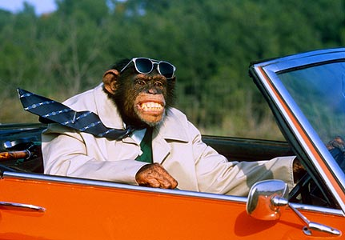
"Evidence for a midlife crisis in great apes consistent with the U-shape in human well-being",
Alexander Weiss, James E. King, Miho Inoue-Murayama, Tetsuro Matsuzawa, and Andrew J. Oswald
Published in the Proceedings of the National Academy of Sciences of the USA, 2012.
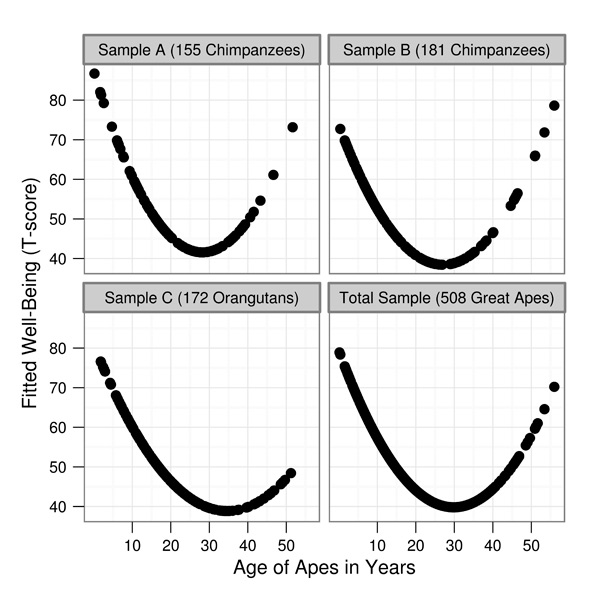
The Happiness of Apes through Life
Larger JPEG (right click and 'save as' to download)
{kind=link}
Contact
Email : andrew.oswald@warwick.ac.uk
Address : Dept of Economics, University of Warwick, Coventry CV4 7AL. United Kingdom.
Press : Contact : Andrew Oswald +44 7876 217717
or Warwick U comms – Peter Dunn Phone: +44-2476-523708 Mobile: +44 7767 655860 Email: p.j.dunn@warwick.ac.uk
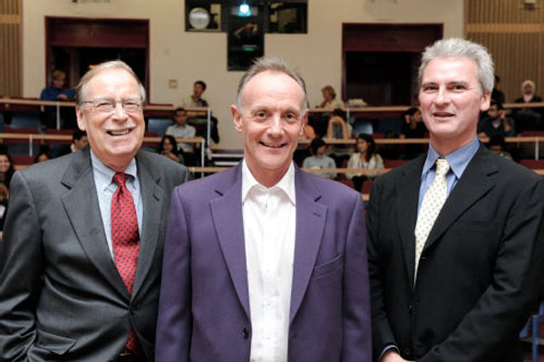
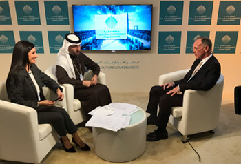 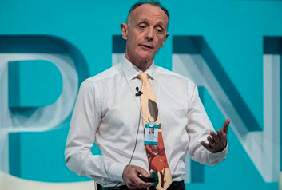
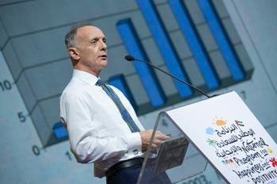 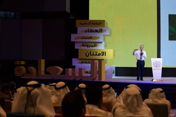
Pictured with Johanna Wallenius (University of Stockholm), Eric Maskin (Harvard), Dan McFadden (Berkeley), David Bloom (Harvard School of Public Health), and Sarah Harper (Oxford).
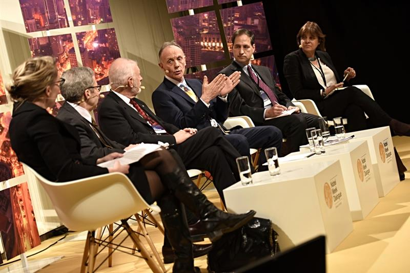
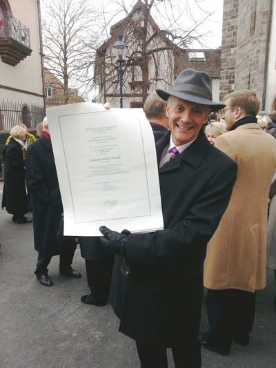
Photos from the 2012 EALE conference in Bonn at which Sandra Black was a keynote speaker
and Richard Blundell received the IZA Prize
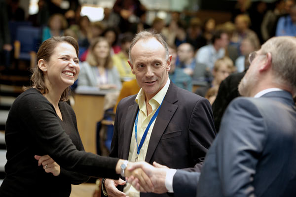
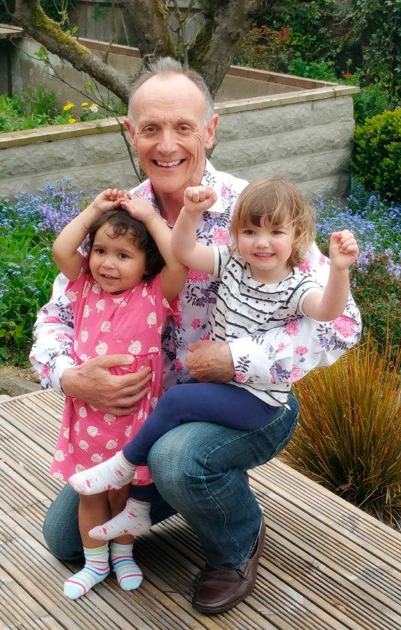